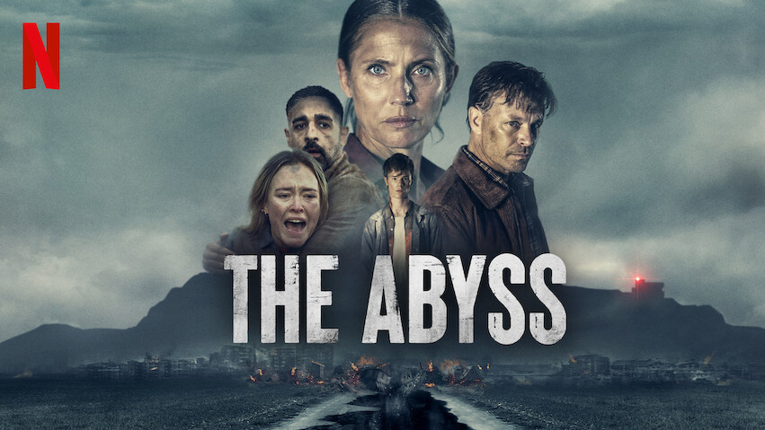
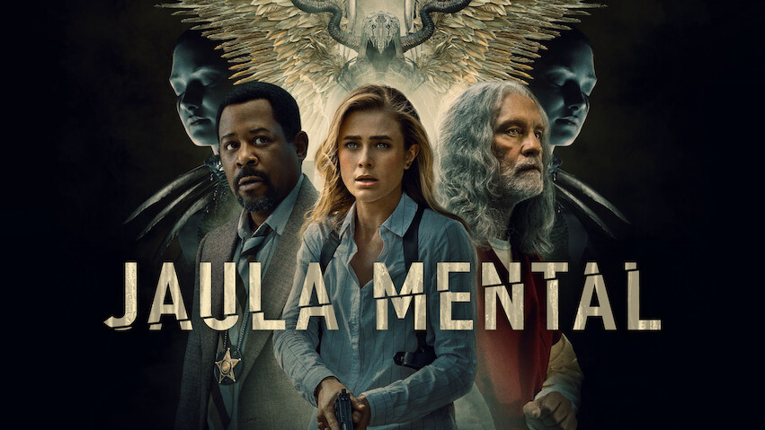

Catálogo de Filmes e Séries





Nos anos 80, o desaparecimento de um garoto revela segredos sombrios em uma pequena cidade. Seus amigos, ao investigarem, encontram uma garota com poderes estranhos e descobrem uma realidade paralela repleta de perigos e criaturas assustadoras. Unidos pela amizade, precisam enfrentar forças ocultas para salvar seu amigo e proteger sua cidade.
Assistir Mais InformaçõesA trama envolve elementos sobrenaturais, mistérios paranormais e referências nostálgicas à cultura pop dos anos 80.
16 Sci-fi Suspense Terror Drama 2016